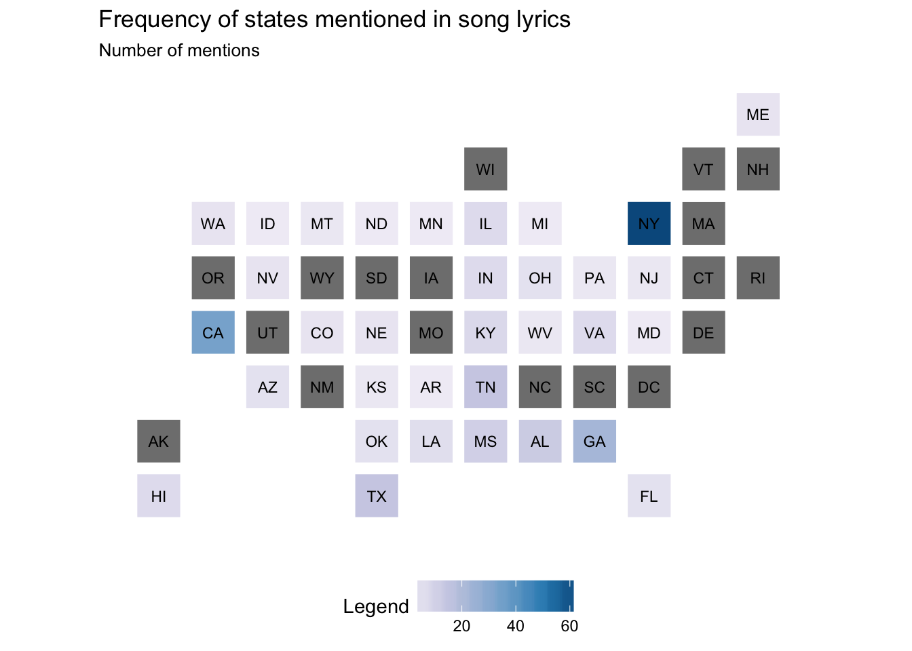
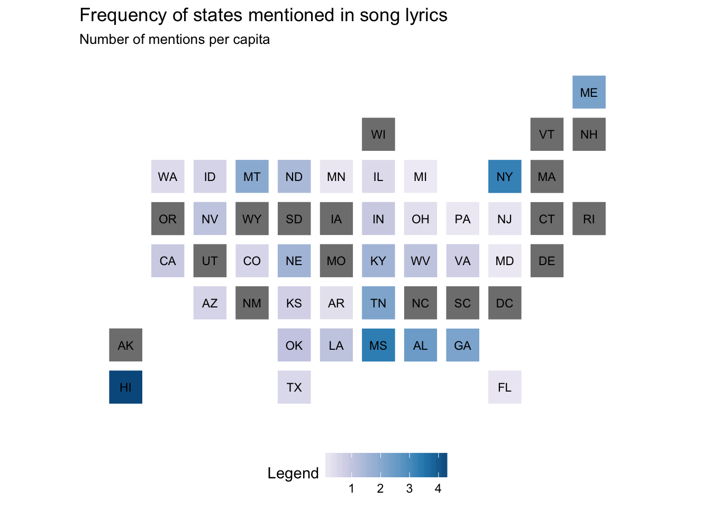

tidytext with song titleslibrary(tidyverse)
library(acs)
library(tidytext)
set.seed(1234)
theme_set(theme_minimal())Today let’s practice our tidytext skills with a basic analysis of song titles. That is, how often is each U.S. state mentioned in a popular song? We’ll define popular songs as those in Billboard’s Year-End Hot 100 from 1958 to the present.
To import the data in-class, just use
read_csv("http://cfss.uchicago.edu/data/pop2014.csv")
First let’s use the acs package to access the U.S. Census Bureau API and obtain population numbers for each state in 2014. This will help us later to normalize state mentions based on relative population size.1
# retrieve state populations in 2014 from Census Bureau
stategeo <- geo.make(state = "*")
popfetch <- acs.fetch(geography = stategeo,
endyear = 2014,
span = 5,
table.number = "B01003",
col.names = "pretty",
key = getOption("census_key"))
# convert to data frame and keep only relevant columns/rows
pop_df <- popfetch %>%
estimate %>%
reshape2::melt() %>%
as_tibble %>%
mutate(state_name = tolower(Var1),
pop2014 = value) %>%
select(state_name, pop2014) %>%
filter(state_name != "puerto rico") %>%
write_csv("data/pop2014.csv")
# do these results make sense?
pop_df %>%
arrange(desc(pop2014)) %>%
top_n(10)## Selecting by pop2014## # A tibble: 10 x 2
## state_name pop2014
## <chr> <dbl>
## 1 california 38066920
## 2 texas 26092033
## 3 new york 19594330
## 4 florida 19361792
## 5 illinois 12868747
## 6 pennsylvania 12758729
## 7 ohio 11560380
## 8 georgia 9907756
## 9 michigan 9889024
## 10 north carolina 9750405To import the data in-class, just use
read_csv("http://cfss.uchicago.edu/data/billboard_lyrics_1964-2015.csv")
Next we need to retrieve the song lyrics for all our songs. Kaylin Walker provides a GitHub repo with the necessary files.
# import into R
song_lyrics <- read_csv("data/billboard_lyrics_1964-2015.csv")## Parsed with column specification:
## cols(
## Rank = col_integer(),
## Song = col_character(),
## Artist = col_character(),
## Year = col_integer(),
## Lyrics = col_character(),
## Source = col_integer()
## )names(song_lyrics)## [1] "Rank" "Song" "Artist" "Year" "Lyrics" "Source"Now your work begins!
tidytext to create a data frame with one row for each token in each songHint: To search for matching state names, this data frame should include both unigrams and bi-grams.
tidy_lyrics <- bind_rows(song_lyrics %>%
unnest_tokens(output = state_name,
input = Lyrics),
song_lyrics %>%
unnest_tokens(output = state_name,
input = Lyrics,
token = "ngrams", n = 2))
tidy_lyrics## # A tibble: 3,201,196 x 6
## Rank Song Artist Year Source
## <int> <chr> <chr> <int> <int>
## 1 1 wooly bully sam the sham and the pharaohs 1965 3
## 2 1 wooly bully sam the sham and the pharaohs 1965 3
## 3 1 wooly bully sam the sham and the pharaohs 1965 3
## 4 1 wooly bully sam the sham and the pharaohs 1965 3
## 5 1 wooly bully sam the sham and the pharaohs 1965 3
## 6 1 wooly bully sam the sham and the pharaohs 1965 3
## 7 1 wooly bully sam the sham and the pharaohs 1965 3
## 8 1 wooly bully sam the sham and the pharaohs 1965 3
## 9 1 wooly bully sam the sham and the pharaohs 1965 3
## 10 1 wooly bully sam the sham and the pharaohs 1965 3
## # ... with 3,201,186 more rows, and 1 more variables: state_name <chr>The variable state_name in this data frame contains all the possible words and bigrams that might be state names in all the lyrics.
First create a data frame that meets this criteria, then save a new data frame that only includes one observation for each matching song. That is, if the song is “New York, New York”, there should only be one row in the resulting table for that song.
inner_join(tidy_lyrics, pop_df)## Joining, by = "state_name"## # A tibble: 526 x 7
## Rank Song Artist Year Source state_name
## <int> <chr> <chr> <int> <int> <chr>
## 1 12 king of the road roger miller 1965 1 maine
## 2 29 eve of destruction barry mcguire 1965 1 alabama
## 3 49 california girls the beach boys 1965 3 california
## 4 49 california girls the beach boys 1965 3 california
## 5 49 california girls the beach boys 1965 3 california
## 6 49 california girls the beach boys 1965 3 california
## 7 49 california girls the beach boys 1965 3 california
## 8 49 california girls the beach boys 1965 3 california
## 9 49 california girls the beach boys 1965 3 california
## 10 49 california girls the beach boys 1965 3 california
## # ... with 516 more rows, and 1 more variables: pop2014 <dbl>Let’s only count each state once per song that it is mentioned in.
tidy_lyrics <- inner_join(tidy_lyrics, pop_df) %>%
distinct(Rank, Song, Artist, Year, state_name, .keep_all = TRUE)## Joining, by = "state_name"tidy_lyrics## # A tibble: 253 x 7
## Rank Song Artist
## <int> <chr> <chr>
## 1 12 king of the road roger miller
## 2 29 eve of destruction barry mcguire
## 3 49 california girls the beach boys
## 4 10 california dreamin the mamas the papas
## 5 77 message to michael dionne warwick
## 6 61 california nights lesley gore
## 7 4 sittin on the dock of the bay otis redding
## 8 10 tighten up archie bell the drells
## 9 25 get back the beatles with billy preston
## 10 25 get back the beatles with billy preston
## # ... with 243 more rows, and 4 more variables: Year <int>, Source <int>,
## # state_name <chr>, pop2014 <dbl>
(state_counts <- tidy_lyrics %>%
count(state_name) %>%
arrange(desc(n)))## # A tibble: 33 x 2
## state_name n
## <chr> <int>
## 1 new york 64
## 2 california 34
## 3 georgia 22
## 4 tennessee 14
## 5 texas 14
## 6 alabama 12
## 7 mississippi 10
## 8 kentucky 7
## 9 hawaii 6
## 10 illinois 6
## # ... with 23 more rowspop_df <- pop_df %>%
left_join(state_counts) %>%
mutate(rate = n / pop2014 * 1e6)## Joining, by = "state_name"pop_df %>%
arrange(desc(rate)) %>%
top_n(10)## Selecting by rate## # A tibble: 10 x 4
## state_name pop2014 n rate
## <chr> <dbl> <int> <dbl>
## 1 hawaii 1392704 6 4.308166
## 2 mississippi 2984345 10 3.350819
## 3 new york 19594330 64 3.266251
## 4 alabama 4817678 12 2.490826
## 5 maine 1328535 3 2.258126
## 6 georgia 9907756 22 2.220483
## 7 tennessee 6451365 14 2.170083
## 8 montana 1006370 2 1.987341
## 9 nebraska 1855617 3 1.616713
## 10 kentucky 4383272 7 1.596981The statebins package is a nifty shortcut for making basic U.S. cartogram maps.
library(statebins)
pop_df %>%
mutate(state_name = stringr::str_to_title(state_name),
state_name = if_else(state_name == "District Of Columbia",
"District of Columbia", state_name)) %>%
statebins_continuous(state_col = "state_name", value_col = "n") +
labs(title = "Frequency of states mentioned in song lyrics",
subtitle = "Number of mentions") +
theme(legend.position = "bottom")
pop_df %>%
mutate(state_name = stringr::str_to_title(state_name),
state_name = if_else(state_name == "District Of Columbia",
"District of Columbia", state_name)) %>%
statebins_continuous(state_col = "state_name", value_col = "rate") +
labs(title = "Frequency of states mentioned in song lyrics",
subtitle = "Number of mentions per capita") +
theme(legend.position = "bottom")
devtools::session_info()## Session info -------------------------------------------------------------## setting value
## version R version 3.4.1 (2017-06-30)
## system x86_64, darwin15.6.0
## ui X11
## language (EN)
## collate en_US.UTF-8
## tz America/Chicago
## date 2017-11-17## Packages -----------------------------------------------------------------## package * version date source
## acs * 2.1.1 2017-07-21 CRAN (R 3.4.1)
## assertthat 0.2.0 2017-04-11 CRAN (R 3.4.0)
## backports 1.1.0 2017-05-22 CRAN (R 3.4.0)
## base * 3.4.1 2017-07-07 local
## bindr 0.1 2016-11-13 CRAN (R 3.4.0)
## bindrcpp * 0.2 2017-06-17 CRAN (R 3.4.0)
## boxes 0.0.0.9000 2017-07-19 Github (r-pkgs/boxes@03098dc)
## broom 0.4.2 2017-08-09 local
## cellranger 1.1.0 2016-07-27 CRAN (R 3.4.0)
## clisymbols 1.2.0 2017-05-21 cran (@1.2.0)
## codetools 0.2-15 2016-10-05 CRAN (R 3.4.1)
## colorspace 1.3-2 2016-12-14 CRAN (R 3.4.0)
## compiler 3.4.1 2017-07-07 local
## crayon 1.3.4 2017-10-03 Github (gaborcsardi/crayon@b5221ab)
## datasets * 3.4.1 2017-07-07 local
## devtools 1.13.3 2017-08-02 CRAN (R 3.4.1)
## digest 0.6.12 2017-01-27 CRAN (R 3.4.0)
## dplyr * 0.7.4.9000 2017-10-03 Github (tidyverse/dplyr@1a0730a)
## evaluate 0.10.1 2017-06-24 CRAN (R 3.4.1)
## forcats * 0.2.0 2017-01-23 CRAN (R 3.4.0)
## foreign 0.8-69 2017-06-22 CRAN (R 3.4.1)
## ggplot2 * 2.2.1 2016-12-30 CRAN (R 3.4.0)
## glue 1.1.1 2017-06-21 CRAN (R 3.4.1)
## graphics * 3.4.1 2017-07-07 local
## grDevices * 3.4.1 2017-07-07 local
## grid 3.4.1 2017-07-07 local
## gridExtra 2.2.1 2016-02-29 CRAN (R 3.4.0)
## gtable 0.2.0 2016-02-26 CRAN (R 3.4.0)
## haven 1.1.0 2017-07-09 CRAN (R 3.4.1)
## hms 0.3 2016-11-22 CRAN (R 3.4.0)
## htmltools 0.3.6 2017-04-28 CRAN (R 3.4.0)
## httr 1.3.1 2017-08-20 CRAN (R 3.4.1)
## janeaustenr 0.1.5 2017-06-10 CRAN (R 3.4.0)
## jsonlite 1.5 2017-06-01 CRAN (R 3.4.0)
## knitr 1.17 2017-08-10 cran (@1.17)
## lattice 0.20-35 2017-03-25 CRAN (R 3.4.1)
## lazyeval 0.2.0 2016-06-12 CRAN (R 3.4.0)
## lubridate 1.6.0 2016-09-13 CRAN (R 3.4.0)
## magrittr 1.5 2014-11-22 CRAN (R 3.4.0)
## Matrix 1.2-11 2017-08-16 CRAN (R 3.4.1)
## memoise 1.1.0 2017-04-21 CRAN (R 3.4.0)
## methods * 3.4.1 2017-07-07 local
## mnormt 1.5-5 2016-10-15 CRAN (R 3.4.0)
## modelr 0.1.1 2017-08-10 local
## munsell 0.4.3 2016-02-13 CRAN (R 3.4.0)
## nlme 3.1-131 2017-02-06 CRAN (R 3.4.1)
## parallel 3.4.1 2017-07-07 local
## pkgconfig 2.0.1 2017-03-21 CRAN (R 3.4.0)
## plyr 1.8.4 2016-06-08 CRAN (R 3.4.0)
## psych 1.7.5 2017-05-03 CRAN (R 3.4.1)
## purrr * 0.2.3 2017-08-02 CRAN (R 3.4.1)
## R6 2.2.2 2017-06-17 CRAN (R 3.4.0)
## RColorBrewer 1.1-2 2014-12-07 CRAN (R 3.4.0)
## Rcpp 0.12.13 2017-09-28 cran (@0.12.13)
## readr * 1.1.1 2017-05-16 CRAN (R 3.4.0)
## readxl 1.0.0 2017-04-18 CRAN (R 3.4.0)
## reshape2 1.4.2 2016-10-22 CRAN (R 3.4.0)
## rlang 0.1.2 2017-08-09 CRAN (R 3.4.1)
## rmarkdown 1.6 2017-06-15 CRAN (R 3.4.0)
## rprojroot 1.2 2017-01-16 CRAN (R 3.4.0)
## rstudioapi 0.6 2016-06-27 CRAN (R 3.4.0)
## rvest 0.3.2 2016-06-17 CRAN (R 3.4.0)
## scales 0.4.1 2016-11-09 CRAN (R 3.4.0)
## SnowballC 0.5.1 2014-08-09 CRAN (R 3.4.0)
## statebins * 1.2.2 2015-12-21 CRAN (R 3.4.0)
## stats * 3.4.1 2017-07-07 local
## stringi 1.1.5 2017-04-07 CRAN (R 3.4.0)
## stringr * 1.2.0 2017-02-18 CRAN (R 3.4.0)
## tibble * 1.3.4 2017-08-22 CRAN (R 3.4.1)
## tidyr * 0.7.0 2017-08-16 CRAN (R 3.4.1)
## tidytext * 0.1.3 2017-06-19 CRAN (R 3.4.1)
## tidyverse * 1.1.1.9000 2017-07-19 Github (tidyverse/tidyverse@a028619)
## tokenizers 0.1.4 2016-08-29 CRAN (R 3.4.0)
## tools 3.4.1 2017-07-07 local
## utils * 3.4.1 2017-07-07 local
## withr 2.0.0 2017-07-28 CRAN (R 3.4.1)
## XML * 3.98-1.9 2017-06-19 CRAN (R 3.4.1)
## xml2 1.1.1 2017-01-24 CRAN (R 3.4.0)
## yaml 2.1.14 2016-11-12 CRAN (R 3.4.0)For instance, California has a lot more people than Rhode Island so it makes sense that California would be mentioned more often in popular songs. But per capita, are these mentions different?↩
This work is licensed under the CC BY-NC 4.0 Creative Commons License.